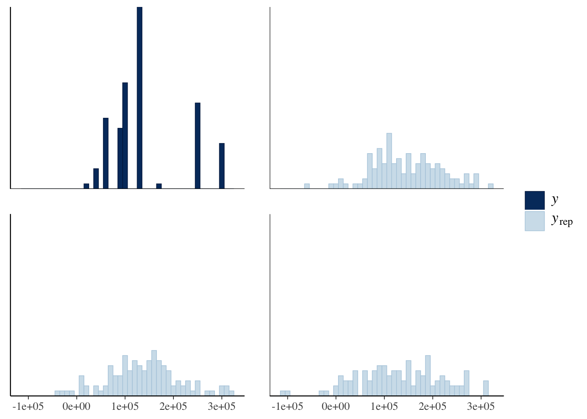

5 Three Parameters
Models have parameters. In Chapter 3 we created models with a single parameter \(p\), the proportion of red beads in an urn. In Chapter 4, we used models with two parameters: \(\mu\) (the average height in the population, generically known as a model “intercept”) and \(\sigma\) (the variation in height in the population). Here — can you guess where this is going? — we will build models with three parameters: \(\sigma\) (which serves the same role throughout the book) and two “coefficients.” In models which relate a continuous predictor to the outcome, those two parameters will be labeled \(\beta_0\) and \(\beta_1\). In models which estimate two averages, the parameters will be \(\beta_1\) and \(\beta_2\). All this notation is confusing, not least because different academic fields use inconsistent schemes. Follow the Cardinal Virtues and tackle your problem step by step.
Perhaps more importantly, a focus on parameters is less relevant now than it was decades ago, when computational limitations made answering our actual questions harder. Parameters are imaginary. They don’t exist. They, in general, are not the answer to an real world question. They are tools, along with the models of which they are a part, we use to answer questions.
Packages:
We are concerned with these three packages because we are exploring the trains dataset which exists within the primer.data package. We use the rstanarm package to explore models and the approach of posterior_predict(). Finally, we use the tidyverse package to conduct all of our graphs and functions.
In this chapter, we are going to ask a series of questions involving train commuters’ ages, party affiliations, incomes, and political ideology, as well as the causal effect of exposure to Spanish-speakers on their attitude toward immigration. These questions will pertain to all train commuters in the US today.
5.1 age ~ party
We want to build a model and then use that model to make claims about the world. Our questions about the relationship between age and party are the following:
What is the probability that, if a Democrat shows up at the train station, he will be over 50 years old?
In a group of three Democrats and three Republicans, what will the age difference be between the oldest Democrat and the youngest Republican?
We can answer these and similar questions by creating a model that uses party affiliation to predict age. Let’s follow the four Cardinal Virtue: Wisdom, Justice, Courage and Temperance.
5.1.1 Wisdom

Wisdom begins with considering the questions we desire to answer and the data set we are given.
5.1.1.1 Preceptor Table
First, do we need a causal or predictive model? In our question above we have a predictive model as we only have one outcome which is the person’s age based on our predictor which is the person’s party.
Second, what is the outcome? A person’s age will be the outcome. Note that the outcome is not necessarily the same concept mentioned in the questions. For example, the outcome column is not “probability that a person is over 50” even though that is one of the questions we need to answer.
Third, what are the units? Our units for this scenario would be individuals because the questions are about the attributes of unique people at the station. The questions, however, leave unclear details. Where train stations are these people at? Which country? Also, at what moment in time is this experiment taking place? In order to dive deeper into these questions we need to engage in a conversation with the person that is asking us these questions.
Fourth, what are the covariates? In our case, a person’s party will be the only covariate because it is another factor that plays to the person’s age and identity. The Preceptor Table must include any covariates mentioned in the question.
Fifth, do we have a treatment? No. We will be using a predictive model as discussed above and treatments will only apply to situations with causal models. A treatment is just a covariate which we can, at least in theory, manipulate, thereby creating other potential outcomes.
Our Preceptor Table:
| Preceptor Table | ||
| ID | Outcome | Covariate |
|---|---|---|
| Age | Party | |
1 |
31 |
D |
2 |
58 |
R |
… |
… |
… |
10 |
67 |
R |
11 |
23 |
R |
… |
… |
… |
N |
44 |
D |
Recall: a Preceptor Table is smallest possible table with rows and columns such that, if there is no missing data, all our questions are easy to answer. To answer questions — like “What is the probability that, if a Democrat shows up at the train station, he will be over 50 years old?” — we need a row for every individual at the station.
When we take a look at the questions we discover that there is a fundamental flaw within our questions. We don’t know the location or the time that exists within these questions making it harder to find the answers to resolve our questions. When this occurs, we need to discuss and dive deeper into the questions that have been asked to understand what the true question is at hand. For the questions that we have at hand we will be using the year 2023 and the location of Chicago, Illinois which will allow us to answer the questions more accurately.
5.1.1.2 Always Explore Your Data
Recall the discussion from Chapter 1. Enos (2014) randomly placed Spanish-speaking confederates on nine train platforms around Boston, Massachusetts. The data that we want to analyze consists of the age and party of each individual on these train platforms based on our variables in our Preceptor Table. These reactions were measured through changes in answers to three survey questions.
trains |>
select(age, party)# A tibble: 115 × 2
age party
<int> <chr>
1 31 Democrat
2 34 Republican
3 63 Democrat
4 45 Democrat
5 55 Democrat
6 37 Democrat
7 53 Republican
8 36 Democrat
9 54 Democrat
10 42 Republican
# ℹ 105 more rowsAs specified in the Preceptor Table we only care about age is the age of the respondent and party is their political party affiliation. party can be shown to have two possibilities: Democrat and Republican.
age party
Min. :20.00 Length:115
1st Qu.:33.00 Class :character
Median :43.00 Mode :character
Mean :42.37
3rd Qu.:52.00
Max. :68.00 The range of values for age seems reasonable. Perhaps children were explicitly excluded from the study. Or perhaps there were no children at the train station on those days.
trains |>
count(party)# A tibble: 2 × 2
party n
<chr> <int>
1 Democrat 96
2 Republican 19There are about 5 times as many Democrats as Republicans, which is perhaps not too surprising in a heavily Democratic state like Massachusetts.
Plotting your data is always a good idea.
trains |>
ggplot(aes(x = age, fill = party)) +
geom_histogram(aes(y = after_stat(count/sum(count))),
alpha = 0.5,
bins = 25,
position = "dodge") +
labs(title = "Distribution of Age and Party",
subtitle = "More data allows for a more precise probability",
x = "Age",
y = "Percent of Sample",
fill = NULL) +
scale_y_continuous(labels = scales::percent_format()) +
scale_fill_manual(values = c("#7fdfe1", "#fbbab6")) +
theme_classic()
Democrats seem slightly older than Republicans. Our estimate for the average age of Democrats in the population will be much more precise than that for Republicans because we have five times as many Democrats as Republicans in our sample.
5.1.1.3 Validity
Do the columns in the Preceptor Table mean the same thing as the columns in the data? That is the heart of validity. Just because we use the same words — age and party — in both tables does not prove that they are, in fact, the same things.
Validity is the assumption which allows us to consider the Preceptor Table and our data to have been drawn from the same population. There is no truth here. The data is real enough, but we created the Preceptor Table. Whether or not there is a population from which we can assume both the data and the Preceptor Table might have been drawn is not a TRUE/FALSE question. tion, we can’t use the data to make inferences about the Preceptor Table.
Now the assumption of validity may not hold due to the possibility of what our terms mean. For example, what it means to be a “Republican” might be very different in Massachusetts (meaning in our data) than what it means in the rest of the United States (meaning the Preceptor Table). Just slapping the two data sources together does not solve that problem. Similarly, age in the data is measured from a survey. People make mistakes. They even lie. In our Preceptor Table, we want the column age to be each person’s actual age.
If party or age are too different between the Preceptor Table and our data, then the assumption of validity fails. We can’t consider both sources to have been drawn from the same popula
Overall, however, the assumption of validity seems reasonable. age and party are close enough between our data and The Preceptor Table that we can “stack” them on top of each other. We will assume that both are drawn from the same population.
5.1.2 Justice

Justice concerns five topics: population table, stability, representativeness, unconfoundedness and the mathematical structure of the data generating mechanism (DGM).
5.1.2.1 Population Table
After assuming validity, we can now create our Population Table. Recall that every row from both the Preceptor Table and the data is included in the Population Table, along with all the rows from the underlying population from which we assume that both the Preceptor Table and the data were drawn.
| Population Table | ||||
| Source | Outcome | Covariates | ||
|---|---|---|---|---|
| Age | Party | Year | City | |
… |
… |
… |
… |
… |
Data |
43 |
Democrat |
2012 |
Boston, MA |
Data |
52 |
Republican |
2012 |
Boston, MA |
… |
… |
… |
… |
… |
… |
… |
… |
… |
… |
Preceptor Table |
… |
Republican |
2023 |
Wilmington, DE |
Preceptor Table |
… |
Republican |
2023 |
Atlanta, GA |
… |
… |
… |
… |
… |
Our year within the Population table is an example of the moment in time.
Our Preceptor Table rows are chronologically ordered. The “other” rows are our greater population for which we are making assumptions — this is why the year at the start is earlier than our data and the year at the end is later than our Preceptor Table. This shows the more expansive population about which we are making inferences.
5.1.2.2 Assumptions
Stability means that the relationship between the columns is the same for three categories of rows: the data, the Preceptor table, and the larger population from which both are drawn. With something like height, it is much easier to assume stability over a greater period of time. Changes in global height occur extremely slowly, so height being stable across a span of 20 years is reasonable to assume. With something like political ideology, it is much harder to make the assertion that data collected in 2010 would be stable to data collected in 2030. When we are confronted with this uncertainty, we can consider making our timeframe smaller. However, we would still need to assume stability from 2014 (time of data collection) to today. Stability allows us to ignore the issue of time.
Representativeness has to do with how well our sample represents the larger population we are interested in generalizing to. For example does the correlation between our “sampling mechanism” and other variables hold to be true. The “sampling mechanism” refers to a mechanism that utilizes sampling in order to get the best possible outcomes with the help of randomization and application to general population. Does the train experiment allow us to calculate a causal effect for people who commute by cars? Can we calculate the causal effect for people in New York City? Before we generalize to broader populations we have to consider if our experimental estimates are applicable beyond our experiment. Generally: if there was no chance that a certain type of person would have been in this experiment, we cannot make an assumption for that person.
Unconfoundedness means that the treatment assignment is independent of the potential outcomes, when we condition on pre-treatment covariates. However, with our scenario, we have a predictive model and this assumption is only relevant for causal models.
5.1.3 Courage

Courage centers around the creation of the data generating mechanism, i.e., our fitted model.
5.1.3.1 Data Generating Mechanism
The type of outcome variable is the most important issue in determining the mathematical form of the data generating mechanism. Since our outcome is a (mostly) continuous variable, a linear DGM is reasonable. If the outcome variable had been binary — had only has two options — we would use a logistic model.
We can also consider the type of DGM. Any DGM with age as its dependent variable will be predictive, not causal, for the simple reason that nothing, other than time, can change your age. You are X years old. It would not matter if you changed your party registration from Democrat to Republican or vice versa. Your age is your age. When dealing with a non-causal DGM, the focus is on predicting things. The underlying mechanism which connects age with party is less important than the brute statistical fact that there is a connection. Predictive models care nothing about causality.
Let’s interpret courage with our our DGM. First let’s take a look at the mathematics:
\[ y_i = \beta_0 + \beta_1 democratic_i + \epsilon_i\]
where \[republican_i, democrat_i \in \{0,1\}\] \[republican_i + democrat_i = 1\] \[\epsilon_i \sim N(0, \sigma^2)\]
Don’t panic dear poets and philosophers, the whole thing is easier than it looks. This will follow the form above in which the outcome is the result of what is in our model and not in our model.
Let’s dive deeper into the data generating mechanism at hand. On the left-hand side we have the outcome, \(y\), which is the variable to be explained. In our case, this is the age of an individual in the population. The right-hand side contains two parts: that which is contained within the model, and that which isn’t.
As important as our mathematics is, we need to take a look at the parameters that we have at hand. Looking at our parameters allows us to create fitted model by combining the mathematics and the interpretations of the parameters. \(\beta_0\) is the difference between the the average age of Republicans and that of Democrats. \(\beta_1\) is the average age of Democrats. As shown in our model, \(\beta_0\) and \(\beta_1\) are two terms that allow us to make our model. The second part in the right-hand side, \(\epsilon\) (“epsilon”), represents the unexplained part of the outcome and is called the error term. In other words, \(\sigma\) is what plays a role with age that is not factored into our model. We assume that this error follows a normal distribution with an expected value of 0 (meaning it is 0 on average) and it is simply the difference between the outcome and our model predictions. Therefore, we have three main parameters: \(\beta_0\), \(\beta_1\), and \(\sigma\) that we will discuss within this section.
Some things we want to note about our model:
The small \(i\)’s are an index to number the observations. It is equivalent to the “ID” column in our Preceptor Table and simply states that the outcome for person \(i\) is explained by the modeled and non-modeled factors for person \(i\).
The model is a claim about how the world works, not just for the 115 individuals for which we have data but for the all the people in the population for which we seek to draw inferences.
Although terminology differs across academic fields, the most common term to describe a model like this is a “regression.” We are “regressing”
ageonpartyin order to see if they are associated with each other. The formula above is a “regression formula”, and the model is a “regression model.” This terminology would also apply to our model ofheightin Chapter 4.The model in Chapter 4 is sometimes called “intercept-only” because the only (interesting) parameter is the intercept.
5.1.3.2 Predictive Model
With the help of Courage we can translate this math into code.
To get posterior distributions for our three parameters, we will again use stan_glm(), just as we did in Chapter 4.
fit_1 <- stan_glm(age ~ party,
data = trains,
family = gaussian,
seed = 17,
refresh = 0)The variable before the tilde,
age, is our outcome.The only explanatory variable is
party. This variable has only two values, ‘Democrat’ and ‘Republican’.Recall that our model is linear. Since we are using a linear model, the
familywe use will begaussian.
The resulting output:
fit_1stan_glm
family: gaussian [identity]
formula: age ~ party
observations: 115
predictors: 2
------
Median MAD_SD
(Intercept) 42.6 1.2
partyRepublican -1.5 3.0
Auxiliary parameter(s):
Median MAD_SD
sigma 12.2 0.8
------
* For help interpreting the printed output see ?print.stanreg
* For info on the priors used see ?prior_summary.stanregThe key concept is the idea of a “population.” From which larger population is the data we have being (conceptually) drawn? If we were only interested in the age of individuals in our data set, we would have no need for inference. We know everyone’s ages already. We only need tools like stan_glm() if we seek to understand individuals not in our data.
The intercept, 42.6 estimates the age of Democrats. The partyRepublican estimate which is -1.5, meaning it is the difference (allowing for rounding) between the average age of Democrats and Republicans.
posterior_predict() will generate the same posterior predictive probability distributions. Which parameterization we use does not matter much. But you should be able to interpret the meaning of the coefficients in both.

If we run a posterior predict check we can view our data based on a histogram graph. When we compare our data with the graphs on the right we can see that our model is fairly accurate. We have been able to predict data that has been proven to be fairly accurate as the fitted model can be seen to have roughly the same structure.
Now that we have run a posterior predict check to ensure that we have a fitted model that best suits us we can display the fitted values of the parameters in a pleasing table:
gtsummary::tbl_regression(fit_1, intercept = TRUE) %>%
bold_labels()| Characteristic | Beta | 95% CI1 |
|---|---|---|
| (Intercept) | 43 | 40, 45 |
| party | ||
| Democrat | — | — |
| Republican | -1.5 | -7.3, 4.3 |
| 1 CI = Credible Interval | ||
Comments:
Democrats seem slightly older than Republicans. That was true in the sample and so, almost (but not quite!) by definition, it will be true in our the posterior probability distributions. We can see this through the
partyRepublicanthat is negative.Our estimate for the average age of Democrats in the population is much more precise than that for Republicans because we have five times as many Democrats as Republicans in our sample. A central lesson from Chapter 3 is that the more data you have related to a parameter, the narrower your posterior distribution will be.
The phrase “in the population” is doing a great deal of work because we have not said what, precisely, we mean by the “population.” Is it the set of people on those commuter platforms on those days in 2012 when the experiment was done? Is it the set of people on all platforms, including ones never visited? Is it the set of all Boston commuters? All Massachusetts residents? All US residents? Does it include people today, or can we only draw inferences for 2012? We should explore these questions in every model we create.
The parameters \(\beta_0\) and \(\beta_1\) can be interpreted in two ways. First, like all parameters, they are a part of the model. We need to estimate them. But, in many cases, we don’t really care what the value of the parameter is. The exact value of \(\sigma\), for example, does not really matter. Second, some parameters have a substantive interpretation, as with \(\beta_0\) and \(\beta_1\) being the average age and difference in the population. Fortunately, with such models, we can use functions like
posterior_epred()andposterior_predict()to answer our questions.
Consider a table which shows a sample of 8 individuals.
| 8 Observations from Trains Dataset | |||
| Age | Party | Fitted | Residual |
|---|---|---|---|
| 31 | Democrat | 42.58 | -11.579447 |
| 34 | Republican | 41.12 | -7.119306 |
| 63 | Democrat | 42.58 | 20.420553 |
| 45 | Democrat | 42.58 | 2.420553 |
| 55 | Democrat | 42.58 | 12.420553 |
| 37 | Democrat | 42.58 | -5.579447 |
| 53 | Republican | 41.12 | 11.880694 |
| 36 | Democrat | 42.58 | -6.579447 |
The fitted values are the same for all Republicans and for all Democrats, as the model produces one fitted value for each condition. This table shows how just a sample of 8 individuals captures a wide range of residuals, making it difficult to predict the age of a new individual. We can get a better picture of the unmodeled variation in our sample if we plot these three variables for all the individuals in our data.
The following three histograms show the actual outcomes, fitted values, and residuals of all people in trains:
outcome <- ch5 |>
ggplot(aes(age)) +
geom_histogram(bins = 100) +
labs(x = "Age",
y = "Count")
fitted <- tibble(age = fitted(fit_1)) |>
ggplot(aes(age)) +
geom_bar() +
labs(x = "Fitted Values",
y = NULL) +
scale_x_continuous(limits = c(20, 70))
res <- tibble(resids = residuals(fit_1)) |>
ggplot(aes(resids)) +
geom_histogram(bins = 100) +
labs(x = "Residuals",
y = NULL)
outcome + fitted + res +
plot_annotation(title = "Decomposition of Height into Fitted Values and Residuals")
The three plots are structured like our equation and table above. A value in the left plot is the sum of one value from the middle plot plus one from the right plot.
The actual age distribution looks like a normal distribution. It is centered around 43, and it has a standard deviation of about 12 years.
The middle plot for the fitted values shows only two adjacent spikes, which represent the estimates for Democrats and Republicans.
Since the residuals plot represents the difference between the other two plots, its distribution looks like the first plot.
When we take a look at all of our data from the fitted model we want to understand the posterior predictive check. A posterior predictive check is targeted for the comparison between what the fitted model predicts and the actual observed data. The aim is to detect if the model is inadequate to describe the data. When we take a look at the data above we can understand that the residuals are high for the fitted model which makes the fitted model less accurate for us to use to predict. We can take a look at this through the fitted model’s prediction of age when compared to the the actual data on the left hand side.
When we take a look at both of our variables: age and party there are several possibilities that may exist. These two variables hold several outcomes based on the way that we interpret them. All of these seemingly “minute” factors play a strong role in changing the outcome of our fitted model and how we are able to provide more accurate results with the help of our model.
5.1.4 Temperance

Courage gave us the fitted model. Temperance guides us in the use of the model we have created to answer the questions we began with.
5.1.4.1 Posterior Predict
Recall the questions with which we began this section:
What is the probability that, if a Democrat shows up at the train station, he will be over 50 years old?
In a group of three Democrats and three Republicans, what will the age difference be between the oldest Democrat and the youngest Republican?
So far we have only tried our model on people from our data set whose real age we already knew. This is helpful to understand the model, but our ultimate goal is to understand more about the real world, about people we don’t yet know much about. Temperance guides us to make meaningful predictions and to become aware of their known and unknown limitations.
Start with a simple question, what are the chances that a random Democrat is over 50 years old? First, we create a tibble with the assumed input for our model. In our case the tibble has a variable named “party” which contains a single observation with the value “Democrat”. This is a bit different than Chapter 4.
new_obs <- tibble(party = "Democrat")Use posterior_predict() to create draws from the posterior for this scenario. Note that we have a new posterior distribution under consideration here. The unknown parameter, call it \(D_{age}\), is the age of a Democrat. This could be the age of a randomly selected Democrat from the population or of the next Democrat we meet or of the next Democrat we interview on the train platform. The definition of “population” determines the appropriate interpretation. Yet, regardless, \(D_{age}\) is an unknown parameter. But it is not one — like \(\beta_0\), \(\beta_1\), or \(\sigma\) — for which we have already created a posterior probability distribution. That is why we need posterior_predict().
posterior_predict() takes two arguments: the model for which the simulations should be run, and a tibble indicating for which and how many parameters we want to run these simulations. In this case, the model is the one from Courage and the tibble is the one we just created.
pp <- posterior_predict(fit_1, newdata = new_obs) |>
as_tibble()
head(pp, 10)# A tibble: 10 × 1
`1`
<dbl>
1 43.9
2 37.0
3 45.0
4 38.2
5 60.2
6 28.6
7 42.9
8 42.7
9 33.1
10 40.2The result are draws from the posterior distribution of the age of a Democrat. It is important to understand that this is not a concrete person from the trains dataset - the algorithm in posterior_predict() simply uses the existing data from trains to estimate this posterior distribution.
pp |>
ggplot(aes(x = `1`)) +
geom_histogram(aes(y = after_stat(count/sum(count))),
bins = 100) +
labs(title = "Posterior for a Random Democrat's Age",
subtitle = "Individual predictions are always more variable than expected values",
x = "Age",
y = "Probability") +
scale_y_continuous(labels = scales::percent_format()) +
theme_classic()
Once we have the posterior distribution, we can answer (almost) any reasonable question. In this case, the probability that the next Democrat will be over 50 is around 28%.
Recall the second question:
- In a group of three Democrats and three Republicans, what will the age difference be between the oldest Democrat and the youngest Republican?
As before we start by creating a tibble with the assumed input. Note that the name of the column (“party”) and the observations (“Democrat”, “Republican”) must always be exactly as they are in the original data set. This tibble as well as our model can then be used as arguments for posterior_predict():
newobs <- tibble(party = c("Democrat", "Democrat", "Democrat",
"Republican", "Republican","Republican"))
posterior_predict(fit_1, newdata = newobs) |>
as_tibble() # A tibble: 4,000 × 6
`1` `2` `3` `4` `5` `6`
<dbl> <dbl> <dbl> <dbl> <dbl> <dbl>
1 49.7 22.9 59.2 48.2 31.7 51.3
2 47.8 60.6 53.4 32.8 25.8 40.8
3 51.5 21.2 18.7 53.2 -0.406 59.6
4 42.2 53.3 51.3 58.6 39.8 49.0
5 21.1 37.5 49.7 61.8 36.0 53.6
6 46.3 38.3 47.2 38.5 63.1 31.9
7 47.3 45.2 31.3 23.8 38.6 42.7
8 47.9 51.1 48.3 42.4 37.3 25.3
9 24.1 37.5 29.8 47.0 49.8 36.0
10 56.6 43.2 39.0 73.2 54.5 41.8
# ℹ 3,990 more rowsWe have 6 columns: one for each person. posterior_predict() does not name the columns, but they are arranged in the same order in which we specified the persons in newobs: D, D, D, R, R, R. To determine the expected age difference, we add code which works with these posterior draws:
pp <- posterior_predict(fit_1, newdata = newobs) |>
as_tibble() |>
# We don't need to rename the columns, but doing so makes the subsequest
# code much easier to understand. We could just have worked with columns 1,
# 2, 3 and so on. Either way, the key is to ensure that you correctly map
# the covariates in newobs to the columns in the posterior_predict object.
set_names(c("dem_1", "dem_2", "dem_3",
"rep_1", "rep_2", "rep_3")) |>
rowwise() |>
# Creating three new columns. The first two are the highest age among
# Democrats and the lowest age among Republicans, respectively. The third one
# is the difference between the first two.
mutate(dems_oldest = max(c_across(dem_1:dem_3)),
reps_youngest = min(c_across(rep_1:rep_3)),
age_diff = dems_oldest - reps_youngest)
pp# A tibble: 4,000 × 9
# Rowwise:
dem_1 dem_2 dem_3 rep_1 rep_2 rep_3 dems_oldest reps_youngest age_diff
<dbl> <dbl> <dbl> <dbl> <dbl> <dbl> <dbl> <dbl> <dbl>
1 48.6 49.9 26.7 47.3 59.0 40.4 49.9 40.4 9.55
2 47.1 38.4 25.3 28.8 38.0 27.4 47.1 27.4 19.6
3 35.9 55.5 49.1 49.6 46.3 36.0 55.5 36.0 19.5
4 37.5 49.4 40.2 44.6 46.3 4.90 49.4 4.90 44.5
5 33.5 35.4 49.4 35.4 61.5 27.9 49.4 27.9 21.5
6 48.4 55.5 51.3 43.7 20.3 30.3 55.5 20.3 35.2
7 60.8 45.5 62.2 35.1 28.3 6.46 62.2 6.46 55.7
8 61.4 40.5 35.0 36.0 47.9 29.7 61.4 29.7 31.7
9 69.3 42.6 35.1 33.2 37.7 50.1 69.3 33.2 36.1
10 33.6 32.8 40.4 77.0 80.2 43.2 40.4 43.2 -2.72
# ℹ 3,990 more rowsThe plotting code is similar to what we have seen before:
pp |>
ggplot(aes(x = age_diff)) +
geom_histogram(aes(y = after_stat(count/sum(count))),
bins = 100) +
labs(title = "Posterior for Age Difference",
subtitle = "Oldest of three Democrats compared to youngest of three Republicans",
x = "Age",
y = "Probability") +
scale_y_continuous(labels = scales::percent_format()) +
theme_classic()
In words, we would expect the oldest Democrat to be about 22 years older than the youngest Republican, but we would not be too surprised if the oldest Democrat was actually younger than the youngest Republican in a group of 6.
5.2 att_end ~ treatment
Above, we created a predictive model: with someone’s party affiliation, we can make a better guess as to what their age is than we could have in the absence of information about their party. There was nothing causal about that model. Changing someone’s party registration can not change their age. In this example, we build a causal model. Consider these two questions:
What is the average treatment effect, of exposing people to Spanish-speakers, on their attitudes toward immigration?
What is the largest causal effect which still has a 1 in 10 chance of occurring?
Answering causal questions requires (at least) two potential outcomes: immigration attitudes when a person receives the treatment of being exposed to Spanish-speakers and immigration attitudes, for that same person, when they don’t receive the treatment. We can answer these and similar questions by creating a model with immigration attitude as the dependent variable and exposure to Spanish-speakers as the independent variable. Let’s follow the four Cardinal Virtue: Wisdom, Justice, Courage and Temperance.
5.2.1 Wisdom
Wisdom requires the creation of a Preceptor Table, an examination of our data, and a determination, using the concept of “validity,” as to whether or not we can (reasonably!) assume that the two come from the same population.
5.2.1.1 Preceptor Table
First, do we need a causal or predictive model? In this case, the model is clearly causal, so our Preceptor Table will have two columns for the potential outcomes.
Second, what is the outcome? A person’s attitude toward immigration is the outcome.
Third, what are the units? Our units for this scenario would be individuals because the questions are about the attributes of unique people at the station. The questions, however, leave unclear the details. Where are these people? Are they at a train station? In which country? Also, at what moment in time is this experiment taking place? We need to engage in a conversation with the person asking us these questions in order to flesh out some of the details.
Fourth, do we have a treatment? Yes. In any causal model, there is at least one covariate which is defined as the “treatment,” something which we can manipulate so that some units receive one version and other units get a different version. In this case, the treatment is exposure to Spanish-speakers. Units can either be exposed, i.e., they receive the “treatment,” or they can not be exposed, i.e., they receive the “control.”
Our Preceptor Table:
| Preceptor Table | |||
| ID | Potential Outcomes | Covariate | |
|---|---|---|---|
| Control Ending Attitude | Treated Ending Attitude | Treatment | |
1 |
… |
8 |
Yes |
2 |
7 |
… |
No |
… |
… |
… |
… |
10 |
… |
5 |
Yes |
11 |
… |
7 |
Yes |
… |
… |
… |
… |
N |
6 |
… |
No |
Recall: a Preceptor Table is the smallest possible table with rows and columns such that, if there is no missing data, all our questions are easy to answer. To answer questions — like “What is the average treatment effect, of exposing people to Spanish-speakers, on their attitudes toward immigration? and What is the largest causal effect which still has a 1 in 10 chance of occurring?” — we need a row for every individual.
When we take a look at the questions we discover a flaw exists. The individual that asked this question did not tell us where or when we are looking at these questions. It is important to understand where and when that we are answering these questions because otherwise our data could be not accurately applied to the whole country, nation, or specific state. Therefore, by diving deeper within these questions we are able to accurately answer our question with the population that it refers to. For the questions that we have at hand we will be using the year 2023 and the location of Chicago, Illinois which will allow us to answer the questions more accurately.
5.2.1.2 Exploratory Data Analysis
Recall the discussion from Chapter 1. Enos (2014) randomly placed Spanish-speaking confederates on nine train platforms around Boston, Massachusetts. The data that we want to analyze consists of the attitude toward immigration after the experiment is complete (att_end) and the exposure to Spanish-speakers (treatment) of each individual on these train platforms.
trains |>
select(att_end, treatment)# A tibble: 115 × 2
att_end treatment
<dbl> <fct>
1 11 Treated
2 10 Treated
3 5 Treated
4 11 Treated
5 5 Control
6 13 Treated
7 13 Control
8 11 Treated
9 12 Control
10 10 Treated
# ℹ 105 more rowsThe treatment can either be “Treated” or “Control” which are the two factors that may influence att_end. Participants were asked three questions about immigration issues, each of which allowed for an answer indicated strength of agreement on a scale form 1 to 5, with higher values for att_end indicating more agreement with conservative viewpoints.
att_end treatment
Min. : 3.000 Treated:51
1st Qu.: 7.000 Control:64
Median : 9.000
Mean : 9.139
3rd Qu.:11.000
Max. :15.000 The data include information about each respondent’s gender, political affiliations, age, income and so on. treatment indicates whether a subject was in the control or treatment group. The key outcomes are their attitudes toward immigration both before (att_start) and after (att_end) the experiment.
summary() shows us what the different values of att_end and treatment are because it is a factor. The range for att_end seems reasonable.
trains |>
ggplot(aes(x = att_end, fill = treatment)) +
geom_bar(aes(y = after_stat(count/sum(count))),
position = "dodge") +
labs(title = "Expected Attitude Toward Immigration",
subtitle = "Treated Individuals Are More Conservative",
x = "Attitude",
y = "Probability",
fill = NULL) +
scale_y_continuous(labels = scales::percent_format()) +
theme_classic()
We can never know the true average attitude of all treated in the population. But we can calculate a probability distribution for each parameter. As we can see with the plot above, the treated individuals tend to be more conservative. When compared with the controlled population, the treated individuals tend to show more signs of being conservative after having the treatment applied to them.
5.2.1.3 Validity
Now the assumption of validity may not hold due to the possibility of when our data was collected. For example if the data was collected in the morning for our Preceptor Table the people that are interviewed may be more grumpy when going to work. Compared to the possibility of our other data being collected at night when the people are more relaxed coming back from work to go home.
Another case where the assumption of validity may not hold because the variables may be too different from each other within the data and the Preceptor Table as the columns are not similar enough between each other. One possible reason we may consider is that the Preceptor Table is all the people in Chicago in 2023. However, the data we have involves train commuters in the Boston area in 2012.
While the assumption can prove validity to be wrong, overall, the assumption of validity seems reasonable enough. att_end and treatment are similar enough between to the underlying concepts in the Preceptor Table and the data that we can “stack” them on top of each other. We can assume that both are drawn from the same population.
5.2.2 Justice
The five concerns of Justice in a data science project remain the same: population table, stability, representativeness, unconfoundedness and the mathematical structure of the data generating mechanism (DGM).
5.2.2.1 Population Table
After assuming validity, we can now create our Population Table. Recall that every row from both the Preceptor Table and the data is included in the Population Table, along with all the rows from the underlying population from which we assume that both the Preceptor Table and the data were drawn. The Population Table includes rows from three sources: the Preceptor Table, the actual data, and all other members of the population.
| Population Table | |||||
| Source | Potential Outcomes | Covariates | |||
|---|---|---|---|---|---|
| Controlled | Treated | Treatment | Year | City | |
… |
… |
… |
… |
… |
… |
Data |
2 |
… |
No |
2012 |
Boston, MA |
Data |
… |
6 |
Yes |
2012 |
Boston, MA |
… |
… |
… |
… |
… |
… |
… |
… |
… |
… |
… |
… |
Preceptor Table |
… |
… |
Yes |
2023 |
Wilmington, DE |
Preceptor Table |
… |
… |
Yes |
2023 |
Atlanta, GA |
… |
… |
… |
… |
… |
… |
Our year within the Population table is an example of the moment in time.
Our actual data rows contain the information that we do know. These rows contain entries for both our covariates and the outcomes. In this case, the actual data comes from a study conducted on train commuters around Boston, MA in 2012, so our city entries for these rows will read “Boston, MA” and our year entries of these rows will read “2012”.
5.2.2.2 Assumptions
Consider the stability of our model for the relationship between att_end and treatment between 2012 and 2023. Is this relationship from 2012, four years before Donald Trump’s election as president, still the same? While we might not know for sure, we have to consider this in order to continue and make assumptions with our data. For our purposes, we will consider the relationship to be stable. Even though we know that there may have been some changes, we will consider the model to be the same in both years.
Let’s now once again consider whether the data from 2012 train commuters around Boston is representative of 2012 train commuters in the US. In our last model, we discussed the issue about how Boston may be different from other cities and therefore not representative of the US, and we will now consider the issue of random sampling that may lead to representativeness issues. For example will the correlation between our “assignment mechanism” and other variables hold to be true? The “assignment mechanism” is a mechanism that utilizes random sampling in order to decide the treatment that certain subjects will receive - it plays a role in deciding which individuals will be the “treated” versus those that will be the “control”
Let’s say that even though Boston is different from other US cities, we considered Boston to be perfectly representative of the US. Great, but this 2012 data could still not be representative. This is because there could be bias within those who are chosen to give the survey, in that the commuters who are approached and receive the surveys may not be random or representative. What if the individuals giving out the surveys were younger and also tended to choose people to approach with a survey that were similar in age to them? A scenario like this could end up overestimating younger train commuters in the population, which could influence our answers to any of our questions. Specifically, when considering the relationship between att_end and treatment, this could influence the results of the model because younger individuals may have similar attitudes on immigration.
5.2.3 Courage
Once we have the mathematical structure of the model, we use Courage to create a fitted model. In Chapter Chapter 6, we will go into much more detail about the process of created a fitted model. This process will involve transforming the variables as well as selecting the variables to include and to discard. For now, however, we keep things simple.
5.2.3.1 Data Generating Mechanism (DGM)
Now, let’s determine whether our DGM will be linear or logistic. Since our outcome variable att_end is a continuous variable since it has a range of possible values, we will use a linear model.
The math for this model is exactly the same as the math for the predictive model in the first part of this chapter, although we change the notation a bit for clarity.
\[ y_i = \beta_1 + \beta_2 control_i + \epsilon_i\]
where \[treatment_i, control_i \in \{0,1\}\] \[treatment_i + control_i = 1\] \[\epsilon_i \sim N(0, \sigma^2)\]
Nothing has changed, except for the meaning of the data items and the interpretations of the parameters. Let’s take a look at the parameters of the situation which plays a role alongside the mathematics to create the fitted model.
On the left-hand side we still have the outcome, \(y\), however in this case, this is a person’s attitude toward immigration after the experiment is complete. \(y\) takes on integer values between 3 and 15 inclusive. On the right-hand side, the part contained in the model will consist of the terms \(\beta_1\) and \(\beta_2\). These two terms stand for the intercept and the control and as before, each term consists of a parameter and a data point. \(\beta_1\) is the average attitude toward immigration for treated individuals. \(\beta_2\) is the difference between the attitude toward immigration for treated individuals — those exposed to Spanish-speakers — and the average attitude toward immigration for control individuals — those not exposed to Spanish-speakers. These are both our parameters. The \(x\)’s are our explanatory variables and take the values 1 or 0. In other words, these are binary variables and are mutually exclusive.The last part, \(\epsilon\) (“epsilon”), represents the part that is not explained by our model and is called the error term. It is simply the difference between the outcome and our model predictions. In our particular case, this includes all factors that have an influence on someone’s attitude toward immigration but are not explained by treatment status. We assume that this error follows a normal distribution with an expected value of 0.
- Note that the formula applies to everyone in the population, not just the 115 people for whom we have data. The index \(i\) does not just go from 1 through 115. It goes from 1 through \(N\), where \(N\) is the number of individuals in the population. Conceptually, everyone has an
att_endunder treatment and under control.
- The small \(i\)’s are an index for the data set. It is equivalent to the “ID” column in our Preceptor Table and simply states that the outcome for person \(i\) is explained by the predictor variables (\(treatment\) and \(control\)) for person \(i\), along with an error term.
5.2.3.2 Causal Model
With Justice satisfied, we gather our Courage and fit the model. Note that, except for the change in variable names, the code is exactly the same as it was above, in our predictive model for age. Predictive models and causal models use the same math and the same code. The differences, and they are very important, lie in the interpretation of the results, not in their creation.
fit_2 <- stan_glm(att_end ~ treatment,
data = trains,
seed = 45,
refresh = 0)
fit_2stan_glm
family: gaussian [identity]
formula: att_end ~ treatment
observations: 115
predictors: 2
------
Median MAD_SD
(Intercept) 10.0 0.4
treatmentControl -1.5 0.5
Auxiliary parameter(s):
Median MAD_SD
sigma 2.8 0.2
------
* For help interpreting the printed output see ?print.stanreg
* For info on the priors used see ?prior_summary.stanregatt_end is a measure of person’s attitude toward immigration. A higher number means more conservative, i.e., a more exclusionary stance toward immigration into the United States.
Note that once again, since we are using a linear model, we set the family argument to “gaussian”.

If we run a posterior predict check we can view our data based on a scatter graph. Through this we can visualize our predictions when compared to the actual data. Our predictions are seemingly accurate when we can run a check on it which shows us that our fitted model has been shown to be seemingly accurate.
Now that we have run a posterior predict check to ensure that we have a fitted model that best suits us we can create a table like the one below to visualize the data we currently have.
| Characteristic | Beta | 95% CI1 |
|---|---|---|
| (Intercept) | 10 | 9.2, 11 |
| treatment | ||
| Treated | — | — |
| Control | -1.5 | -2.6, -0.55 |
| 1 CI = Credible Interval | ||
(Intercept) corresponds to 10.0 which is \(\beta_1\). As always, R has, behind the scenes, estimated the entire posterior probability distribution for \(\beta_1\). We will graph that distribution in the next section. But the basic print method for these objects can’t show the entire distribution, so it gives us summary numbers: the median and the MAD SD. Speaking roughly, we would expect about 95% of the values in the posterior to be within two MAD SD’s of the median. In other words, we are 95% confident that the true, but unknowable, average attitude toward immigration among the Treated in the population to be between 9.2 and 10.8. treatmentControl corresponds to \(\beta_2\). The treatmentControl estimate, is -1.5 because we are taking the difference from the “control” and the “treated”.
Up until now, we have used the Bayesian interpretation of “confidence interval.” This is also the intuitive meaning which, outside of academia, is almost universal. There is a truth out there. We don’t know, and sometimes can’t know, the truth. A confidence interval, and its associated confidence level, tells us how likely the truth is to lie within a specific range. If your boss asks you for a confidence interval, she almost certainly is using this interpretation.
But, in contemporary academic research, the phrase “confidence interval” is usually given a “Frequentist” interpretation. (The biggest divide in statistics is between Bayesians and Frequentist interpretations. The Frequentist approach, also known as “Classical” statistics, has been dominant for 100 years. Its power is fading, which is why this textbook uses the Bayesian approach.) For a Frequentist, a 95% confidence interval means that, if we were to apply the procedure we used in an infinite number of future situations like this, we would expect the true value to fall within the calculated confidence intervals 95% of the time. In academia, a distinction is sometimes made between confidence intervals (which use the Frequentist interpretation) and credible intervals (which use the Bayesian interpretation). We won’t worry about that difference in this Primer.
We can decompose the the dependent variable, att_end into two parts: the fitted values and the residuals. There are only two possible fitted values, one for the Treated and one for the Control. The residuals, as always, are simply the difference between the outcomes and the fitted values.

The smaller the spread of the residuals, the better a job the model is doing of explaining the outcomes. The residuals that we have above explains our error that we have within the model. As we can see above, our model did not do a great job of predicting the attitude toward immigration as our fitted values only present two possible values. The credit of this goes towards the residuals as the error within our graph is huge causing for the fitted values to be smaller and less precise.
5.2.4 Temperance
Courage gave us the fitted model. With temperance we can create posteriors of the quantities of interest. We should be modest in the claims we make.
5.2.4.1 Posterior Predict
Recall the first question with which we began this section:
- What is the average treatment effect, of exposing people to Spanish-speakers, on their attitudes toward immigration?
Chapter Chapter 1 defined the average treatment effect. One simple estimator of the average treatment effect is the difference between \(\beta_1\) and \(\beta_2\). After all, the definition of \(\beta_1\) is the average attitude toward immigration, of the population, for anyone, under exposure to the treatment. So, \(\beta_1 - \beta_2\) is the average treatment effect for the population, roughly 1.5. However, estimating the posterior probability distribution for this parameter is tricky, unless we make use of the posterior distributions of \(\beta_1\) and \(\beta_2\). With that information, the problem is simple:
fit_2 |>
as_tibble() |>
ggplot(aes(x = treatmentControl)) +
geom_histogram(aes(y = after_stat(count/sum(count))),
bins = 100) +
labs(title = "Posterior for Average Treatment Effect",
subtitle = "Exposure to Spanish-speakers shifts immigration attitudes rightward",
x = "Difference in Attitude",
y = "Probability") +
scale_y_continuous(labels = scales::percent_format()) +
theme_classic()
Could the true value of the average treatment effect be as much as 2 or as little as 1? Of course! The most likely value is around 1.5, but the variation in the data and the smallness of our sample cause the estimate to be imprecise. However, it is quite unlikely that the true average treatment effect is below zero.
We can use posterior_epred() to answer this question. Create a tibble and use it as we have done before:
newobs <- tibble(treatment = c("Treated", "Control"))
pe <- posterior_epred(fit_2, newobs) |>
as_tibble() |>
mutate(ate = `1` - `2`)
pe# A tibble: 4,000 × 3
`1` `2` ate
<dbl> <dbl> <dbl>
1 10.0 8.54 1.49
2 9.62 8.47 1.15
3 9.42 8.56 0.861
4 10.0 9.42 0.623
5 9.96 9.49 0.462
6 9.44 8.83 0.617
7 10.3 9.24 1.01
8 10.2 9.07 1.15
9 9.89 8.88 1.01
10 9.81 9.06 0.750
# ℹ 3,990 more rowsThe posterior probability distribution created with posterior_epred() is the same as the one produced by manipulating the parameters directly.
pe |>
ggplot(aes(x = ate)) +
geom_histogram(aes(y = after_stat(count/sum(count))),
bins = 100) +
labs(title = "Posterior for Average Treatment Effect",
subtitle = "Exposure to Spanish-speakers shifts immigration attitudes rightward",
x = "Difference in Attitude",
y = "Probability") +
scale_y_continuous(labels = scales::percent_format()) +
theme_classic()
Our second question:
- What is the largest effect size which still has a 1 in 10 chance of occurring?
Create a tibble which we can pass to posterior_predict(). The variables in the tibble which will be passed in as newdata. Fortunately, the tibble we created above is just what we need for this question also.
Consider the result of posterior_predict() for two people, one treated and one control. Take the difference.
pp <- posterior_predict(fit_2,
newdata = newobs) |>
as_tibble() |>
mutate(te = `1` - `2`)
pp# A tibble: 4,000 × 3
`1` `2` te
<dbl> <dbl> <dbl>
1 15.7 10.2 5.58
2 10.6 10.0 0.577
3 10.0 6.77 3.24
4 11.3 11.5 -0.177
5 9.95 8.82 1.14
6 8.23 10.3 -2.09
7 10.9 8.03 2.83
8 7.30 12.2 -4.94
9 6.69 9.68 -2.99
10 1.97 5.71 -3.74
# ℹ 3,990 more rowsCreate a graphic:
pp |>
ggplot(aes(x = te)) +
geom_histogram(aes(y = after_stat(count/sum(count))),
bins = 100) +
labs(title = "Posterior for Treatment Effect for One Person",
subtitle = "Causal effects are more variable for indvduals",
x = "Difference in Attitude",
y = "Probability") +
scale_y_continuous(labels = scales::percent_format()) +
theme_classic()
In this case, we are looking at the distribution of the treatment effect for a single individual. This is very different than the average treatment effect. In particular, it is much more variable. We are looking at one row in the Preceptor Table. For a single individual, att_end can be anywhere from 3 to 15, both under treatment and under control. The causal effect — the difference between the two potential outcomes can, in theory, be anywhere from -12 to +12. Such extreme values are rare, but not impossible.
The question, however, was interested in the value at the 90th percentile.
quantile(pp$te, prob = 0.9) 90%
6.773144 We would not expect a treatment effect of this magnitude to be common, but, at the same time, effects this big and bigger will occur about 10% of the time.
5.3 income ~ age
So far, we have only created models in which the predictor variable is discrete, with two possible values. party is either “Democrat” or “Republican”. treatment is either “Treated” or “Control”. Often times, however, the predictor variable will be continuous. We can answer these and similar questions by creating a model that uses party affiliation to predict age. Let’s follow the four Cardinal Virtue: Wisdom, Justice, Courage and Temperance. Fortunately, the exact same approach works in this case. Consider:
What would you expect the income to be for a 40-year old?
5.3.1 Wisdom
Wisdom requires the creation of a Preceptor Table, an examination of our data, and a determination, using the concept of “validity,” as to whether or not we can (reasonably!) assume that the two come from the same population.
Let’s take a look at our question below:
What would you expect the income to be for a 40-year old?
5.3.1.1 Preceptor Table
First, do we need a causal or predictive model? In our question above we have a predictive model as we are only considered with one outcome: a person’s income based on their age.
Second, what is the outcome? A person’s income would be our outcome.
Third, what are the units? Our units for this scenario would be dollars as we are concerned with dollars at the station for 40-year olds.
Fourth, what are the covariates? In this case, a person’s age is the only covariate. The Preceptor Table must include any covariates mentioned in the question.
Fifth, do we have a treatment? No. We will be using a predictive model as discussed above and treatments will only apply to situations with causal models. A treatment is just a covariate which we can, at least in theory, manipulate, thereby creating other potential outcomes.
Our Preceptor Table:
| Preceptor Table | ||
| ID | Outcome | Covariate |
|---|---|---|
| Income | Age | |
1 |
150000 |
31 |
2 |
50000 |
58 |
… |
… |
… |
10 |
65000 |
67 |
11 |
35000 |
23 |
… |
… |
… |
N |
78000 |
44 |
Recall: a Preceptor Table is table with rows and columns such that, if there is no missing data, all our questions are easy to answer. To answer questions — like “What would you expect the income to be for a 40-year old?” — we need a row for every individual at the station.
When we take a look at the questions we discover a flaw exists. The individual that asked this question did not tell us where or when we are looking at these questions. Do we need to look at the year 2022, 2020, 2018? Do we need to look in Florida, Connecticut, Maryland? It is vital to understand where and when that we are answering these questions because otherwise our data could be not accurately applied to the whole country, nation, or specific state. Therefore, by diving deeper within these questions we are able to accurately answer our question with the population that it refers to. For the questions that we have at hand we will be using the year 2023 and the location of Chicago, Illinois which will allow us to answer the questions more accurately.
5.3.1.2 Data Analysis
Recall the discussion from Chapter 1. Enos (2014) randomly placed Spanish-speaking confederates on nine train platforms around Boston, Massachusetts. The data that we want to analyze consists of the age and party of each individual on these train platforms based on our variables in our Preceptor Table. These reactions were measured through changes in answers to three survey questions.
trains |>
select(age, income)# A tibble: 115 × 2
age income
<int> <dbl>
1 31 135000
2 34 105000
3 63 135000
4 45 300000
5 55 135000
6 37 87500
7 53 87500
8 36 135000
9 54 105000
10 42 135000
# ℹ 105 more rowsAs specified in the Preceptor Table we only care about age is the age of the respondent and income is the income of the respondent. The age and income are both numbers either as a double or integer which plays a role in making up an individual’s identity.
age income
Min. :20.00 Min. : 23500
1st Qu.:33.00 1st Qu.: 87500
Median :43.00 Median :135000
Mean :42.37 Mean :141813
3rd Qu.:52.00 3rd Qu.:135000
Max. :68.00 Max. :300000 summary() shows us what the different values of age and income are because it is a factor. The range for age seems reasonable. Recall that participants were asked three questions about immigration issues, each of which allowed for an answer indicated strength of agreement on a scale form 1 to 5, with higher values indicating more agreement with conservative viewpoints.
trains |>
ggplot(aes(age)) +
geom_histogram(aes(y = after_stat(count*10000)),
bins = 50) +
labs(x = "Age",
y = "Income") +
scale_y_continuous(labels = scales::dollar_format()) +
theme_classic()
We can never know the true average income of the population. But we can calculate a distribution for each parameter. As we can see with the plot above, the older individuals tend to be have more of an income. When compared with the younger individuals, the older individuals tend to exhibit a greater income because of the longer life and possibilities they have.
5.3.1.3 Validity
Recall that validity refers to whether or not we can consider the columns age and income to have the same meaning in our data set of 2012 Boston train commuters and in our Preceptor Table. While age doesn’t really change meaning over time, income can be impacted by inflation. After all, $100,000 in 2012 doesn’t have the same worth as $100,000 now due to inflation and now would have less purchasing power. This would result in income being underestimated within our model. However, since there hasn’t been drastic inflation that dramatically changed the buying power, we will consider income to be valid. If there had been like 300% inflation, however, our conclusion would probably be different.
Now the assumption of validity may not hold due to the possibility of how our age data was collected. For example, the data has been collected from filling out surveys about age without checking a driver’s license. We don’t know whether our age is accurate enough when compared to the driver’s license of an individual.
Another possible scenario that could prove the assumption of validity wrong could be the privacy of each station. The privacy of a train station differs from filling out surveys at home. The key difference that exists between the Preceptor Table and the data can exist from the difference in privacy that we have between the two sets of data.
While the assumption can prove validity to be wrong, overall, the assumption of validity seems reasonable enough. age and income are similar enough between to the underlying concepts in the Preceptor Table and the data that we can “stack” them on top of each other. We can assume that both are drawn from the same population.
5.3.2 Justice
Once again, in Justice, we must consider the population table, stability, representativeness, unconfoundedness and the mathematical structure of the data generating mechanism (DGM).
5.3.2.1 Population Table
With our assumption of validity proving to be reasonably accurate, we can now create our Population Table. We can make a Population Table with our Preceptor Table and other data based on our assumptions that we have made.
| Population Table | ||||
| Source | Outcome | Covariates | ||
|---|---|---|---|---|
| Income | Age | Year | City | |
… |
… |
… |
… |
… |
Data |
150000 |
43 |
2012 |
Boston, MA |
Data |
50000 |
52 |
2012 |
Boston, MA |
… |
… |
… |
… |
… |
… |
… |
… |
… |
… |
Preceptor Table |
45000 |
… |
2023 |
Wilmington, DE |
Preceptor Table |
15000 |
… |
2023 |
Atlanta, GA |
… |
… |
… |
… |
… |
Our year within the Population table is an example of the moment in time.
The Population Table includes commuters from our Preceptor Table with the information that we would ideally have to answer the questions and those from the data we have that is specific to Boston, MA. Additionally, the Population Table also includes the groups of people within the population from which both the data we have and the Preceptor table is drawn from that we don’t have.
5.3.2.2 Assumptions
Consider the stability of our model and if we believe that our relationship between age and income has changed between 2012 and now. Once again, let’s consider inflation and how that could impact income. If incomes were to increase at the rate of inflation, then the income distribution would be different than that of 2012. However, wages don’t tend to change as quickly as inflation does, so they likely did not change significantly and we can consider this model to be stable.
Next, let’s consider another issue that we may have with representativeness. For example will the correlation between our “sampling mechanism” and other variables hold to be true? The “sampling mechanism” is a mechanism that utilizes sampling in order to get the best possible outcomes with the help of randomization and application to general population. What if we were now to assume that Boston train commuters are perfectly representative of US train commuters AND those who were approached to respond to the survey were also random? Even if this were true, we could still not assume representativeness because those who actually complete and submit the survey are not random. Instead of having more young people chosen to respond by those handing out surveys like we discussed in our last model, what if were to assume that when the surveys are handed out randomly, younger people tended to fill out and submit them more than those who are older? Well, this would still skew the age distribution and overestimate younger people in the population, and if younger people also tend to have a lower income than older people, this could also alter our answers to our current questions.
If we had reason to believe this is true, one way that we could fix this issue of representativeness is to alter our population to be train commuters in the US who would respond to the survey. In doing so, our population would then accommodate for the skewed age distribution under the assumption that younger individuals tend to respond to surveys at higher rates than older people.
5.3.3 Courage
Once we have construct the mathematical structure of our model through the data generating mechanism we can use Courage to create a fitted model. The process of creating our fitted model will involve the transformation of several variables with a discussion and what variables to include and discard.
5.3.3.1 Data Generating Mechanism (DGM)
Let’s interpret courage with our our DGM. First let’s take a look at the mathematics:
The mathematics for a continuous predictor is unchanged from the intercept-including example we explored previously.
\[y_i = \beta_0 + \beta_1 age_i + \epsilon_i\]
When comparing two people (persons 1 and 2), the first one year older than the second, \(\beta_1\) is the expected difference in their incomes. The algebra is simple. Start with the two individuals.
\[y_1 = \beta_0 + \beta_1 age_1\] \[y_2 = \beta_0 + \beta_1 age_2\] We want the difference between them, so we subtract the second from the first, performing that subtraction on both sides of the equals sign.
\[y_1 - y_2 = \beta_0 + \beta_1 age_1 - \beta_0 - \beta_1 age_2\\ y_1 - y_2 = \beta_1 age_1 - \beta_1 age_2\\ y_1 - y_2 = \beta_1 (age_1 - age_2)\]
So, if person 1 is one year older than person 2, we have:
\[y_1 - y_2 = \beta_1 (age_1 - age_2)\\ y_1 - y_2 = \beta_1 (1)\\ y_1 - y_2 = \beta_1\]
The algebra demonstrates that \(\beta_1\) is the same for all ages. The difference in expected income between two people aged 23 and 24 is the same as the difference between two people aged 80 and 81. Is that plausible? Maybe. The algebra does not lie. When we create a model like this, this is the assumption we are making.
Note how careful we are not to imply that increasing age by one year “causes” an increase in income. That is nonsense! No causation without manipulation. Since it is impossible to change someone’s age, there is only one potential outcome. With only one potential outcome, a causal effect is not defined.
As important as our mathematics is, we need to take a look at the parameters at hand. Looking at our parameters allows us to create fitted model by combining the mathematics and interpretations of the parameters. \(\beta_0\) is the difference in expected income between individuals. \(\beta_1\) is the average age within all of the people in the dataset. As shown in our model, \(\beta_0\) and \(\beta_1\) are two terms that allow us to make our model. The second part in the right-hand side, \(\epsilon\) (“epsilon”), represents the unexplained part of the outcome and is called the error term. In other words, \(\sigma\) is what plays a role with age that is not factored into our model. We assume that this error follows a normal distribution with an expected value of 0 (meaning it is 0 on average) and it is simply the difference between the outcome and our model predictions. Therefore, we have three main parameters: \(\beta_0\), \(\beta_1\), and \(\sigma\) that we will use within this section.
5.3.3.2 Predictive Model
The use of stan_glm() is the same as usual.
fit_3 <- stan_glm(income ~ age,
data = trains,
seed = 28,
refresh = 0)
print(fit_3, details = FALSE)stan_glm
family: gaussian [identity]
formula: income ~ age
observations: 115
predictors: 2
------
Median MAD_SD
(Intercept) 103288.5 24077.6
age 907.8 535.8
Auxiliary parameter(s):
Median MAD_SD
sigma 74121.3 4897.0
------
* For help interpreting the printed output see ?print.stanreg
* For info on the priors used see ?prior_summary.stanregWhen comparing two individuals, one 30 years old and one 40, we expect the older to earn about $9,000 more. But we are far from certain: the 95% confidence interval ranges from -$3,000 to $20,000.
The above is a good summary of the models.
It is brief! No one wants to listen to too much of your prattle. One sentence gives a number of interest. The second sentence provides a confidence interval.
It rounds appropriately. No one wants to hear a bunch of decimals. Use sensible units.
It does not just blindly repeat numbers in the printed display. A one year difference in age, which is associated with a $900 difference in income, is awkward. (We think.) A decade comparison is more sensible.
“When comparing” is a great phrase to start the summary of any non-causal model. Avoid language like “associated with” or “leads to” or “implies” or anything which even hints at a causal claim.

If we run a posterior predict check we can view our data based on a histogram graph. Through this we can visualize our predictions when compared to the actual data. Our predictions are seemingly accurate when we can run a check on it which shows us that our fitted model has been shown to be seemingly accurate even if it is not as probable about the data.
Now that we have run a posterior predict check to ensure that we have a fitted model that best suits us we can create a table like the one below to visualize the data we currently have.
| Characteristic | Beta | 95% CI1 |
|---|---|---|
| (Intercept) | 103,289 | 57,808, 151,719 |
| age | 908 | -221, 1,936 |
| 1 CI = Credible Interval | ||
(Intercept) corresponds to 103,062 which is \(\beta_0\). As always, R has, behind the scenes, estimated the entire posterior probability distribution for \(\beta_0\). We will graph that distribution in the next section. But the basic print method for these objects can’t show the entire distribution, so it gives us summary numbers: the median and the MAD SD. Speaking roughly, we would expect about 95% of the values in the posterior to be within two MAD SD’s of the median.
Consider our usual decomposition of the outcome into two parts: the model and the error term.

There are scores of different fitted values. Indeed, there are a greater number of different fitted values than there are different outcome values! This is often true for models which have continuous predictor variables, we have here with age.
5.3.4 Temperance
Courage gave us the fitted model. With temperance the posteriors we create are never the “truth.” The assumptions we made to create the model are never perfect.
5.3.4.1 Posterior Predict
Recall our question:
What would you expect the income to be for a random 40 year old?
Given that we are looking for an expected value, we use posterior_epred().
newobs <- tibble(age = 40)
pe <- posterior_epred(fit_3, newdata = newobs) |>
as_tibble()
pe# A tibble: 4,000 × 1
`1`
<dbl>
1 142106.
2 141530.
3 141363.
4 139289.
5 139647.
6 142876.
7 139427.
8 143336.
9 145881.
10 143052.
# ℹ 3,990 more rowsPlotting is the same as always.
pe |>
ggplot(aes(x = `1`)) +
geom_histogram(aes(y = after_stat(count/sum(count))),
bins = 100) +
labs(title = "Posterior for Expected Income",
subtitle = "A 40-years old commuter earns around $140,000",
x = "Income",
y = "Probability") +
scale_x_continuous(labels = scales::dollar_format()) +
scale_y_continuous(labels = scales::percent_format()) +
theme_classic()
5.4 liberal ~ income
So far in this chapter, we have only considered continuous outcome variables. age, att_end and income all take on a variety of values. None of them are, truly, continuous, of course. age is only reported as an integer value. att_end can only, by definition, take on 13 distinct values. However, from a modeling perspective, what matters is that they have more than 2 possible values.
liberal, however, only takes on two values: TRUE and FALSE. In order to model it, we must use the binomial family. We begin, as always, with some questions:
Among all people who have an income $100,000, what proportion are liberal?
Assume we have a group of eight people, two of whom make $100,000, two $200,000, two $300,000 and two $400,000. How many will be liberal?
We can answer these and similar questions by creating a model that uses party affiliation to predict age. Let’s follow the four Cardinal Virtue: Wisdom, Justice, Courage and Temperance.
5.4.1 Wisdom
Wisdom requires the creation of a Preceptor Table, an examination of our data, and a determination, using the concept of “validity,” as to whether or not we can (reasonably!) assume that the two come from the same population. Let’s take a look at our question below:
Among all people who have an income $100,000, what proportion are liberal?
Assume we have a group of eight people, two of whom make $100,000, two $200,000, two $300,000 and two $400,000. How many will be liberal?
5.4.1.1 Preceptor Table
First, do we need a causal or predictive model? In our question above we have a causal model as we would have multiple potential outcomes with a person’s attitude based on whether the person is liberal or not.
Second, what is the outcome? A person’s attitude would be the outcome in this scenario.
Third, what are the units? Our units for this scenario would be individuals because the questions are about the attributes of unique people at the station.
Fourth, do we have a treatment? Yes. In any causal model, there is at least one covariate which is defined as the “treatment,” something which we can manipulate so that some units receive one version and other units get a different version. In this case, the treatment would be whether an individual’s attitude changes. Units can either be exposed, i.e., they are a “treated”, or they can not be exposed, i.e., they are a “control.”
Our Preceptor Table:
| Preceptor Table | |||
| ID | Potential Outcomes | Covariate | |
|---|---|---|---|
| Liberal Ending Attitude | Not Liberal Ending Attitude | Income | |
1 |
… |
8 |
150000 |
2 |
7 |
… |
50000 |
… |
… |
… |
… |
10 |
… |
5 |
65000 |
11 |
4 |
… |
35000 |
… |
… |
… |
… |
N |
6 |
… |
78000 |
Recall: a Preceptor Table is table with rows and columns such that, if there is no missing data, all our questions are easy to answer. To answer questions — like “Among all people who have an income $100,000, what proportion are liberal? and Assume we have a group of eight people, two of whom make $100,000, two $200,000, two $300,000 and two $400,000. How many will be liberal?” — we need a row for every individual at the station.
When we take a look at the questions we discover that there is a flaw that exists. The individual that asked this question did not give us the location or the time that we want to use for these questions at hand. It is vital to understand where and when that we are answering these questions because otherwise it could apply to the whole country, nation, or specific state. Therefore, by diving deeper within these questions we are able to accurately answer our question with the population that it refers to. For the questions that we have at hand we will be using the year 2023 and the location of Chicago, Illinois which will allow us to answer the questions more accurately.
5.4.1.2 Data Analysis with Exploratory Approach
Recall the discussion from Chapter 1. Enos (2014) randomly placed Spanish-speaking confederates on nine train platforms around Boston, Massachusetts. The data that we want to analyze consists of the age and party of each individual on these train platforms based on our variables in our Preceptor Table. These reactions were measured through changes in answers to three survey questions.
trains |>
select(liberal, income)# A tibble: 115 × 2
liberal income
<lgl> <dbl>
1 FALSE 135000
2 FALSE 105000
3 TRUE 135000
4 FALSE 300000
5 TRUE 135000
6 FALSE 87500
7 FALSE 87500
8 FALSE 135000
9 FALSE 105000
10 FALSE 135000
# ℹ 105 more rowsAs specified in the Preceptor Table we only care about liberal is whether they are liberal or not and income is the income of the respondent. liberal is shown to be TRUE when the individual is liberal and FALSE when an individual is not liberal, playing a role in shaping their attitude towards the immigrants.
liberal income
Mode :logical Min. : 23500
FALSE:64 1st Qu.: 87500
TRUE :51 Median :135000
Mean :141813
3rd Qu.:135000
Max. :300000 summary() shows us what the different values of liberal and income are because it is a factor. The range for income seems reasonable.
trains |>
ggplot(aes(x = income, fill = treatment)) +
geom_bar(aes(y = after_stat(count/sum(count))),
position = "dodge") +
labs(title = "Expected Income Based On Treatment",
x = "Income in 1000s",
y = "Probability",
fill = NULL) +
scale_x_continuous(labels = scales::dollar_format(scale = 1/1000)) +
scale_y_continuous(labels = scales::percent_format()) +
theme_classic()
We can never know the true average income is of all treated in the population. But we can calculate a distribution. As we can see with the plot above, the income stays relatively constant based on either the treatment.
5.4.1.3 Validity
Now let’s take a look at the assumption of validity for our data and Preceptor Table. There is no truth here. The assumption of validity may not hold due to the possibility of how our data was collected. We asked each individual whether they were “liberal,” which means that we didn’t rely on the government database. The possibility of the data being different from the government database and the way that we asked each individual may differ across both the Preceptor Table and the data which can prove the assumption of validity to be false.
Another case where the assumption of validity may not hold would be from how our income data was collected similar to our age data collection. The data has been collected from filling out surveys about income without cross-checking with the government database. We don’t know whether our income is accurate enough when compared to the government’s database to the survey that each individual filled out.
While this assumption can prove validity wrong, overall, the assumption of validity seems reasonable. liberal and income are similar enough between our data and The Preceptor Table that we can “stack” them on top of each other. We can assume that both are drawn from the same population.
5.4.2 Justice
Let’s now consider Justice for the relationship between liberal and income. In Justice, we must consider the population table, stability, representativeness, unconfoundedness and the mathematical structure of the data generating mechanism (DGM).
5.4.2.1 Population Table
With our assumption of validity proving to be reasonably accurate, we can now create our Population Table. We can make a Population Table with our Preceptor Table and other data based on our assumptions that we have made. With the assumption of validity proving to be reasonable we are able to construct a Population Table because we have been able to confirm that our rows in the Preceptor Table and data are similar.
| Population Table | |||||
| Source | Potential Outcomes | Covariates | |||
|---|---|---|---|---|---|
| Liberal Ending Attitude | Not Liberal Ending Attitude | Income | Year | City | |
… |
… |
… |
… |
… |
… |
Data |
6 |
… |
150000 |
2012 |
Boston, MA |
Data |
9 |
… |
50000 |
2012 |
Boston, MA |
… |
… |
… |
… |
… |
… |
… |
… |
… |
… |
… |
… |
Preceptor Table |
… |
3 |
45000 |
2023 |
Wilmington, DE |
Preceptor Table |
… |
2 |
15000 |
2023 |
Atlanta, GA |
… |
… |
… |
… |
… |
… |
Our year within the Population table is an example of the moment in time.
Look at the validity of the liberal variable. This column has the values “Liberal” and “Not Liberal” to convey the political ideology of the train commuters. We must determine if the column liberal, and therefore the meaning of being liberal, is the same in Boston in 2012 as in the US in 2023. If we can determine these to be the same, then we can assume validity, and in this case, because the core beliefs of being liberal have not changed very much between 2012 and 2023, we can determine that the data is valid.
5.4.2.2 Assumptions
Let’s look at stability with the relationship between liberal and income and determine whether or not we believe that this relationship has changed between 2012 and 2023. With our knowledge of the world, do we have any reason to believe that this has changed? What if between 2012 and 2023, income increased for those who are liberal? Well, then our model for the the relationship between income and liberal would have changed over the years, and therefore so would the model. However, since with our knowledge of the world we have no reason to believe that something of the sorts happened to affect this relationship, we can consider our model to be stable.
When we take a look at representativeness we want to look at the correlation between our sampling mechanism and our variables at hand. For example will the correlation between our “sampling mechanism” and other variables hold to be true? The mechanism utilizes sampling in order to get the best possible outcomes with the help of randomization and application to general population. In our past three models, we have considered three possible issues that we could have with the representativeness of our model, such as the difference between Boston and other cities, problems with random sampling, and bias in those who respond, and we will now consider how in this survey there were surveys given before and after treatment, and some people may have filled out only one of the surveys. People who only filled out one of the surveys could affect the representativeness of the data because they could not be included in the data and if those who only filled out one survey tended to be liberal, then this would affect our data because it would underestimate the amount of liberals in the survey. This is something we must consider when looking at representativeness, since we could otherwise not determine if this data from train commuters in Boston in 2012 is representative enough of train commuters in the US now to continue using our data.
5.4.3 Courage
We will use the mathematical structure that through the data generating mechanism to generate a fitted model with the help of Courage. Courage allows us to explore different models. We can avoid hypothesis tests as we check our models for consistency with the data we have.
5.4.3.1 Data Generating Mechanism (DGM)
Let’s consider whether this model is linear or logistic. Unlike our previous models this chapter, the outcome variable, liberal, for this model, only has two options, “Liberal” or “Not Liberal”. Therefore, this will be logistic because there are only 2 possible outcomes and the outcome variable isn’t continuous.
Recall the discussion in Section 4.5 about the logistic regression model which we use whenever the outcome or dependent variable is binary/logical. The math is there, if you care about math. We don’t, at least not too much. Reminder:
\[p(\text{Liberal}_i = \text{TRUE}) = \frac{\text{exp}(\beta_0 + \beta_1 \text{income}_i)}{1 + \text{exp}(\beta_0 + \beta_1 \text{income}_i)}\]
This model only has two parameters, \(\beta_0\) and \(\beta_1\). But these parameters do not have simple interpretations, unlike the parameters in a linear (or gaussian) model.
Recall the fundamental structure of all data science problems:
\[\text{outcome} = \text{model} + \text{what is not in the model}\] The exact mathematics of the model — the parameters, their interpretations — are all just dross in the foundry of our inferences: unavoidable but not worth too much of our time.
Even if the math is ignorable, the causal versus predictive nature of the model is not. Is this a causal model or a predictive model? It depends! It could be causal if you assume that we can manipulate someone’s income, if, that is, there are at least two potential outcomes: person \(i\)’s liberal status if she makes X dollars and person \(i\)’s liberal status if she makes Y dollars. Remember: No causation without manipulation. The definition of a causal effect is the difference between two potential outcomes. If you only have one outcome, then your model can not be causal.
In many circumstances, we don’t really care if a model is causal or not. We might only want to forecast/predict/explain the outcome variable. In that case, whether we can interpret the influence of a variable as causal is irrelevant to our use of that variable.
5.4.3.2 Causal Model
Fitting a logistic model is easy. We use all the same arguments as usual, but with family = binomial added.
fit_4 <- stan_glm(data = ch5,
formula = liberal ~ income,
family = binomial,
refresh = 0,
seed = 365)Having fit the model, we can look at a printed summary. Note the use of the digits argument to display more digits in the printout.
print(fit_4, digits = 6)stan_glm
family: binomial [logit]
formula: liberal ~ income
observations: 115
predictors: 2
------
Median MAD_SD
(Intercept) 0.562837 0.426033
income -0.000006 0.000003
------
* For help interpreting the printed output see ?print.stanreg
* For info on the priors used see ?prior_summary.stanregFitted models tell us about the posterior distributions for the parameters in the formula which defines the model we have estimated. We are assuming that the model is true. And, as discussed in Chapter 3, that assumption is always false! Our model is never a perfectly accurate representation of reality. But, if it were perfect, then the posterior distributions which we have created for \(\beta_0\), \(\beta_1\), and so on would be perfect as well.
When working with a linear model, we will often interpret the meaning of the parameters, as we have already done in the first three sections of this chapter. Such interpretations are much harder with logistic models because the math is much less convenient. So, we won’t even bother to try to understand the meaning of these parameters. However, we can note that \(\beta_1\) is negative, suggesting that people with higher incomes are less likely to be liberal.

With the graph above we can view our predicted data based on the actual data. Our model did a great job in predicting the data as we can see above. The purpose of running a posterior predict check on our data is to ensure that the model we have will make sense based on the observed data.
Now that we have run a posterior predict check to ensure that we have a fitted model that best suits us we can create a table like the one below to visualize the data we currently have.
| Characteristic | log(OR)1 | 95% CI1 |
|---|---|---|
| (Intercept) | 0.56 | -0.26, 1.4 |
| income | 0.00 | 0.00, 0.00 |
| 1 OR = Odds Ratio, CI = Credible Interval | ||
(Intercept) corresponds to 0.56 which is \(\beta_0\). As always, R has, behind the scenes, estimated the entire posterior probability distribution for \(\beta_0\). We will graph that distribution in the next section. But the basic print method for these objects can’t show the entire distribution, so it gives us summary numbers: the median and the MAD SD. Speaking roughly, we would expect about 95% of the values in the posterior to be within two MAD SD’s of the median.
As we can see with the able above are using log(OR) which means that the way that we interpret the data given to us plays a huge role in the way that we can predict future data. When we are dealing with income for example we can either use the log of income or deal with income straight which play different roles in changing the way that we feed and understand the data. With the different ways that we are inputting the data, the model changes because of the variables that are changing within the model.
5.4.4 Temperance
Courage gave us the fitted model. With temperance the decisions made with flawed posteriors are almost always better than decisions made without them.
5.4.4.1 Posterior Predict
Among all people who have an income $100,000, what proportion are liberal?
Although our model is now logistic, all the steps in answering a question like this are the same as with a linear/guassian model.
newobs <- tibble(income = 100000)
pe <- posterior_epred(fit_4,
newdata = newobs) |>
as_tibble()pe is a tibble with a single vector. That vector is 4,000 draws from the posterior distribution of proportion of people, among those who make $100,000, who are liberal. The population proportion is the same thing as the probability for any single individual.
pe |>
ggplot(aes(x = `1`)) +
geom_histogram(aes(y = after_stat(count/sum(count))),
bins = 100) +
labs(title = "Posterior for Proportion Liberal Among $100,000 Earners",
subtitle = "The population proportion is the same as the probability for any individual",
x = "Income",
y = "Probability of Being Liberal") +
scale_x_continuous(labels = scales::percent_format(accuracy = 1)) +
scale_y_continuous(labels = scales::percent_format(accuracy = 1)) +
theme_classic()
Assume we have a group of eight people, two of whom make $100,000, two $200,000, two $300,000 and two $400,000. How many will be liberal?
Because we are trying to predict the outcome for a small number of units, we use posterior_predict(). The more complex the questions we ask, the more care we need to devote to making the newobs tibble. We use the same rowwise() and c_across() tricks as earlier in the chapter.
newobs <- tibble(income = c(rep(100000, 2),
rep(200000, 2),
rep(300000, 2),
rep(400000, 2)))
pp <- posterior_predict(fit_4,
newdata = newobs) |>
as_tibble() |>
rowwise() |>
mutate(total = sum(c_across()))Warning: There was 1 warning in `mutate()`.
ℹ In argument: `total = sum(c_across())`.
ℹ In row 1.
Caused by warning:
! Using `c_across()` without supplying `cols` was deprecated in dplyr 1.1.0.
ℹ Please supply `cols` instead.
pp# A tibble: 4,000 × 9
# Rowwise:
`1` `2` `3` `4` `5` `6` `7` `8` total
<int> <int> <int> <int> <int> <int> <int> <int> <int>
1 0 1 1 1 0 0 0 0 3
2 0 0 0 1 1 1 0 0 3
3 1 1 1 1 0 0 0 0 4
4 1 1 0 0 0 0 0 0 2
5 1 0 0 1 1 1 1 1 6
6 0 0 0 1 0 0 1 1 3
7 0 0 1 0 0 0 1 0 2
8 0 0 1 0 1 0 0 0 2
9 1 1 1 0 0 0 0 0 3
10 1 1 0 1 0 0 0 0 3
# ℹ 3,990 more rowsStudy the pp tibble. Understand its component parts. The first column, for example, is 4,000 draws from the posterior distribution for the liberal status of a random person with an income of $100,000. Note how all the draws are zeroes or ones. That is very different from the draws we have seen before! But it also makes sense. We are making a prediction about a binary variable, a variable which only have two possible values: zero or one. So, any (reasonable!) predictions will only be zero or one.
The second column is the same thing as the first column. Both are 4,000 draws from the posterior distribution for the liberal status of a random person with an income of $100,000. Yet they also have different values. They are both the same thing and different things, in the same way that rnorm(10) and rnorm(10) are the same thing — both are 10 draws from the standard normal distribution — and different things in that the values vary.
The third and fourth columns are different from the first two columns. They are both 4,000 draws from the posterior distribution for the liberal status of a random person with an income of $200,000. And so on for later columns. We can answer very difficult questions by putting together simple building blocks, each of them a set of draws from a posterior distribution. Recall the discussion in Section 2.1.
The total column is simply the sum of the first eight columns. Having created the building blocks with 8 columns of draws from four different posterior distributions, we can switch our focus to each row. Consider row 2. It has a vector of 8 numbers: 1 1 1 0 0 1 0 0. We can treat that vector as a unit of analysis. This is what might happen with our 8 people. The first three might be liberal, the fourth not liberal and so on. This row is just one example of what might happen, one draw from the posterior distribution of possible outcomes for groups of eight people with these incomes.
We can simplify this draw by taking the sum, or doing anything else which might answer the question with which we are confronted. Posterior distributions are as flexible as individual numbers. We can, more or less, just use algebra to work with them.
Graphically we have:
pp |>
ggplot(aes(x = total)) +
geom_histogram(aes(y = after_stat(count/sum(count))),
bins = 100) +
labs(title = "Posterior for Number of Liberals in Group with Varied Incomes",
subtitle = "Two is the most likely number, but values from 0 to 5 are plausible",
x = "Number of Liberals",
y = "Probability") +
scale_x_continuous(labels = scales::number_format(accuracy = 1)) +
scale_y_continuous(labels = scales::percent_format(accuracy = 1)) +
theme_classic()
As always, there is some truth. If, tomorrow, we were to meet 8 new people, with the specified incomes, a certain number of them would be liberal. If we had the ideal Preceptor Table, we could just look up that number. No data science required. Alas, we don’t know the truth. The bets we can do is to create a posterior distribution for that unknown value, as we have done here. We then need to translate that posterior into English — “The most likely number of liberals is 2 or 3, but a total as low as zero or as high as 5 is also plausible. Having 6 liberals would be really surprising. Having 7 or 8 is almost impossible.”
Are these two posterior probability distributions perfect? No! This is the central message of the virtue of Temperance. We must demonstrate our humility when we use our models. Recall the distinction between the unknown true distribution and the estimated distribution. The first is the posterior distribution we would create of we understood every detail of the process and could accurately model it. We would still not know the true unknown number, but our posterior distribution for that number would be perfect. Yet, our model is never perfect. We are making all sorts of assumptions behind the scenes. Some of those assumptions are plausible. Others are less so. Either way, the estimated distribution is what we have graphed above.
The central lesson of Temperance is: Don’t confuse the estimated posterior (which is what you have) with the true posterior (which is what you want). Recognize the unavoidable imperfections in the process. You can still use your estimated posterior — what choice do you have? — but be cautious and humble in doing so. The more that you suspect that your estimated posterior differs from the true posterior, the more humble and cautious you should be.
5.5 Summary
Throughout this chapter, we explored relationships between different variables in the trains data set. We built two predictive models and two causal models.
Similar to previous chapters, our first task is to always use Wisdom. We want to judge how relevant our data is based on the questions we ask. Is it reasonable to consider the data we have (e.g., income and age data from Boston commuters in 2012) are being drawn from the same population as the data we want to have (e.g., income and age data from today for the entire US)? Probably? Recall that these questions will bring up the assumption of validity and whether our data will be able to “stack” up with each other.
Our next step is to take a look at Justice which helps us decide the best way to represent the models that we will make. A little math won’t kill you. Translating that math into code will be through the help of Courage. Our primary goal is to generate posterior distributions for the parameters and understand/interpret their meaning. Finally, we end off with Temperance that uses our models to answer the questions that we have asked above. Remember it is important to hone in on our questions to the most that we can because the most detailed questions will allow for the more accurate answers to prevail.
Key Lessons and Commands That Were Talked About:
Create a model using
stan_glm().Use
posterior_epred()to estimate expected values. The e in epred stands for expected.Use
posterior_predict()to make forecasts for individuals. The variable in predictions is always greater than the variability in expectations because predictions can’t pretend that \(\epsilon_i\) is zero.Once we have draws from a posterior distribution for our outcome variable — whether that be an expectation or a prediction — we can manipulate those draws to answer our question.
Always Remember the Following:
Always explore your data.
Predictive models care little about causality.
Predictive models and causal models use the same math and the same code.
“When comparing” is a great phrase to start the summary of any non-causal model.
Don’t confuse the estimated posterior (which is what you have) with the true posterior (which is what you want). Be cautious in your use of the posterior.